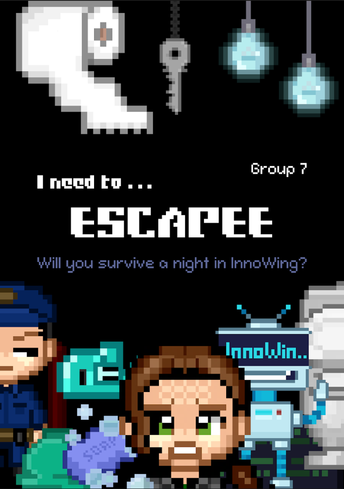
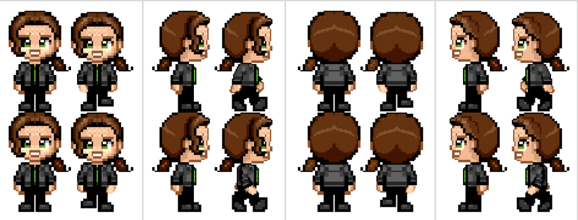
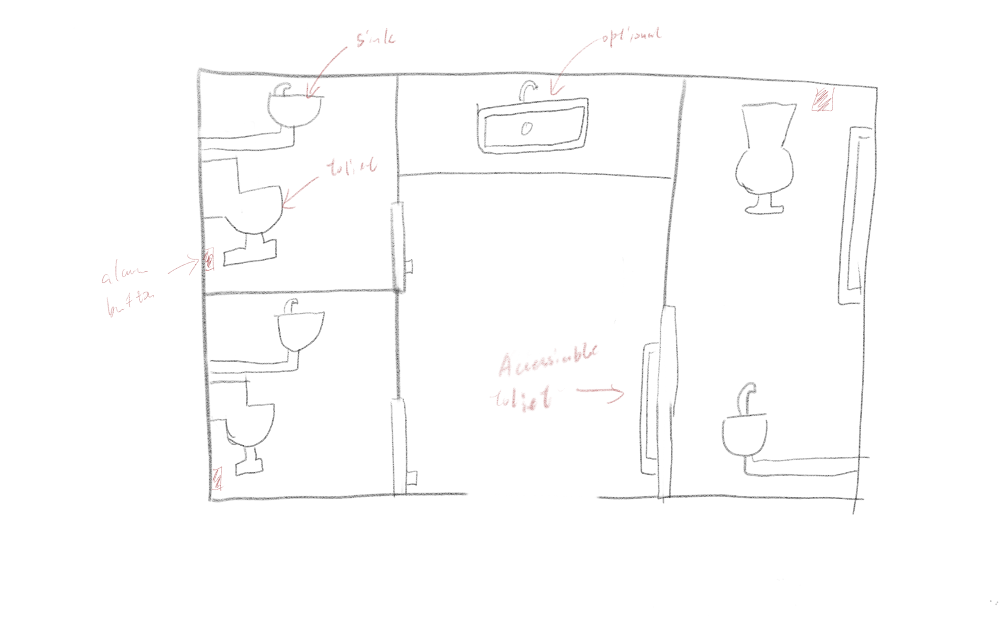
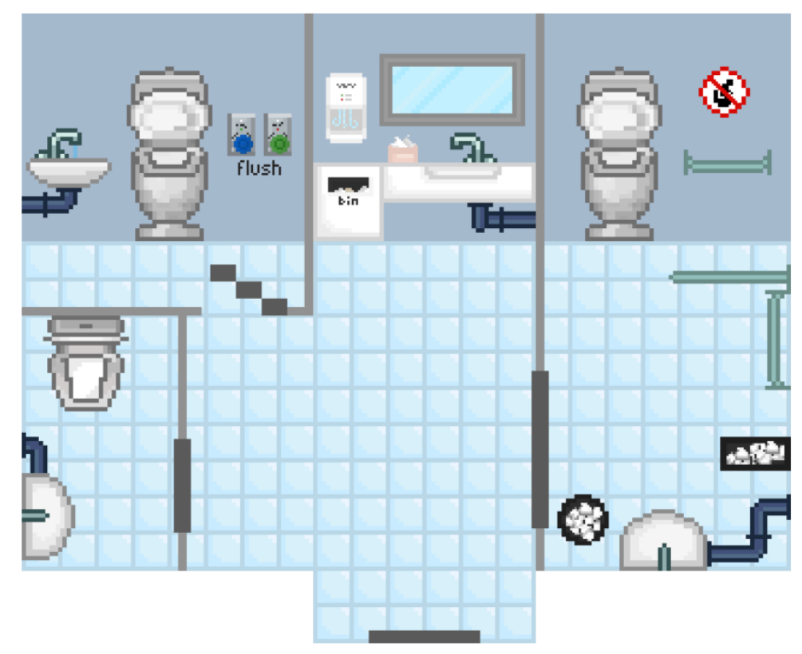
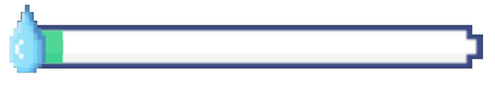

2D pixel game about finding a toilet before it's too late
Colaborated with Isabella Fiore Dolcetta Capuzzo, Raphaele Michelle Guillemot, Ching Yu TsangTrailer | Report | Github Repo
This all started on the day that we were thinking of what game to make, and one of us really need to pee but couldn't find the toliet. So we were like "why not just make this our game!".
Here, we took that very real, very relatable siutation and turned it into an escape room game, where there are rooms to explore, puzzles to coplete, endings to unlock (only one keeps your dignity), and toilet to go.

Game Design
You play as Ione, who wakes up alone in the Innowing (our engineeering building) and your student card is gone (because your friend "borrowed" it). You cannot leave the building. BUT you really need to pee.

In order to go to the toilet, you need to collect the toilet paper roll, key card, plunger, soap, and toilet key. Some just lie around and you can pick them up, but some are locked behind puzzles where you need to use your brian power.
All the items are scattered around different rooms. There is a total of 6 rooms that have real corresponding rooms in the Innowing, like the 3D printing room and lab space.


To keep track of everything, a "Peedometer" slowly fills up as you explore (no pressure), and once it maxes out, well, you're not going to pee in the toilet... There's also an inventory box that shows all the items that you need to or have collected, plus a dialogue box at the bottom of the screen for whenever you interact with something.
There are a bunch easter eggs (like inside jokes of InnoWing and our prof) that you can find if you explore. Also, there is a suprise event that can change your ending, so be aware 😏
